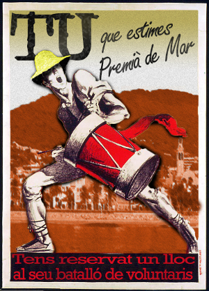

Quí som?

La resistència neix fa 10 anys de la fusió de diferents colles de premianencs: les Forces Unificades Antipirates (FUA) i la Unió de la Resistència Premianenca Antipirata (URPA) que després d'actuar durant molt de temps de manera independent, van decidir juntar forces per actuar d'una manera més eficaç contra els pirates.
Actualment, som un grup de premianencs i premianenques que treballem per plantar cara als pirates i lluitem fins fer-los fora de Premià i recuperar la normalitat a la nostra vila.
Som incansables, lluitadors i treballadors. Cap a la primavera, sortim del cau i ens posem mans a l'obra per començar a preparar la nostra festa major (i també anem preparant recursos i materials, per si els pirates decideixen tornar a ocupar el poble, tenir la resistència a punt).
Què fem?
Participem als actes principals de la festa: Desembarcament, Revolta Premianenca i Expulsió.
Des de fa quatre anys, tenim un espai propi davant del teatre Patronat, el Refugi Premianenc on ens reunim per fer planejar l'expulsió dels pirates, però també per gaudir de les activitats que organitzem.
Punt de trobada
El nostre punt de trobada clandestí és el següent:
Local Pirates i Premianencs
Plaça dels Països Catalans
Gran Vía 170
Premià de Mar (Barcelona)
Sobretot no li digueu a ningún pirata...
Contacte
Voleu ser premianencs? Teniu ganes de formar part de la resistència? Voleu venir a donar-nos suport als actes de la festa?
Uneix-te a la resistència omplint aquest formulari: